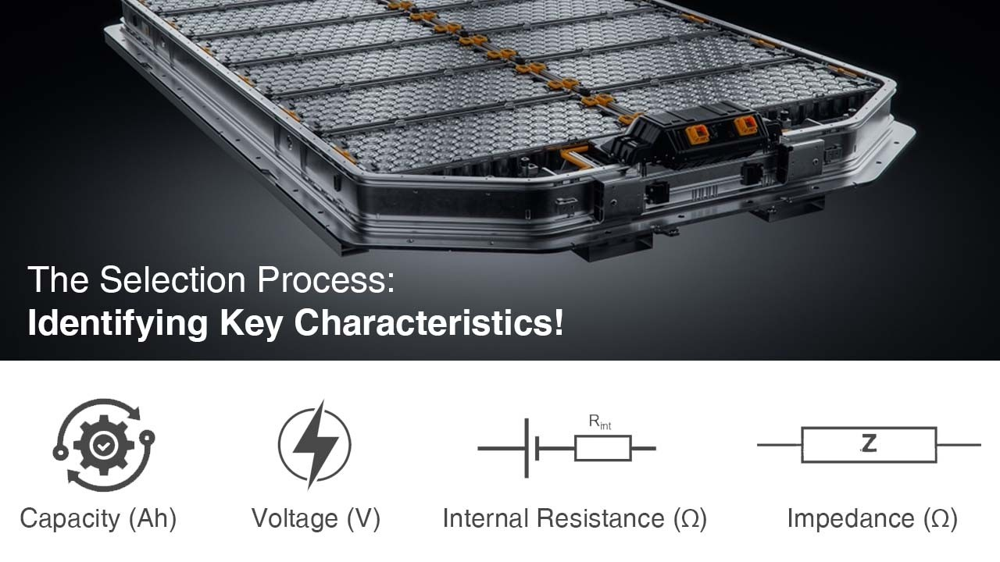

You must have heard about cell matching of the lithium-ion batteries. Accurate matching of cells is crucial to the stability and safety of lithium battery quality. In this article, we would try understanding the importance of cell matching, the processes related to it.
Before grouping cells, it is necessary to fully understand the relevant parameters of the cell, make matching and selection according to the needs of electronic equipment, and consider the accurate matching of parameters such as internal resistance and internal voltage drop to ensure the stability and safety of the battery pack. At the same time, it can also achieve longer battery life and better performance.
What are the benefits of cell matching in terms of battery performance, longevity, and safety?
In the process of matching cells for a battery pack, the cells are tested on various parameters. Three important parameters are Capacity, Voltage and Internal Resistance. Generally, during the grading process the cells are tested and categorized as good or bad. Good cells have better capacity, they match the Voltage and an Internal Resistance around or close to zero.

The Selection Process: Identifying Key Characteristics
The first step in cell matching involves measuring crucial parameters of each cell. These parameters influence how the cell performs within a pack:
- Capacity (Ah): This measures the amount of charge a cell can store and deliver. Cells with similar capacities are grouped to avoid imbalances during charging and discharging.
- Voltage (V): This represents the electrical potential difference within a cell. In series connections, cells need nearly identical voltages for even distribution across the pack. Mismatched voltages can overload some cells while undercharging others, impacting performance and safety.
- Internal Resistance (Ω): This signifies the opposition a cell offers to current flow. Cells with similar internal resistance ensure even current distribution and prevent overheating.
- Impedance (Ω): A broader term encompassing resistance and reactive elements within a cell. Similar impedance values are preferred for consistent performance.
Additional Factors
- Age: Cells of similar age degrade at a more uniform rate, minimizing imbalances within the pack.
- Manufacturer: Cells from the same manufacturer often exhibit more consistent performance characteristics. Although not a very big concern but manufacturer's name is generally checked during grouping.
- Temperature Coefficient: Cells with similar responses to temperature fluctuations ensure more predictable behavior in the pack.
Grouping for Compatibility and Balanced Performance
Once cells are graded based on their measured values, they are grouped for compatibility. Ideally, cells with the closest matching parameters are chosen to be connected together, either in series (to increase voltage) or parallel (to increase capacity).
Balancing for Long-Term Reliability: Even with careful matching, slight variations between cells can occur. To address this, some battery packs incorporate Battery Management Systems (BMS) with cell balancing capabilities. These systems monitor individual cell voltages and take corrective actions, such as shunting excess current from fully charged cells, to prevent overcharging and ensure a longer lifespan for the entire pack.
By employing cell matching techniques, engineers can create reliable and long-lasting lithium-ion battery packs, maximizing their performance, safety, and lifespan in various applications.
- What parameters are typically considered when matching cells, such as capacity, voltage, internal resistance, and impedance?
For optimal performance, safety, and longevity in a battery pack, careful matching of individual cells is crucial. Several key parameters influence this process. Capacity, measured in Ampere-hours (Ah), refers to the amount of charge a cell can store and deliver. Ideally, cells in a pack should have very similar capacities to prevent imbalances during charging and discharging. A mismatch can lead to a reduced overall capacity and a shorter lifespan for the entire pack.
Voltage, measured in Volts (V), represents the electrical potential difference within a cell. When cells are connected in series, they need to have nearly identical voltages to ensure an even distribution of voltage across the entire pack. Any mismatch can overload some cells while undercharging others, negatively impacting performance and potentially causing safety hazards. Similarly, internal resistance, measured in Ohms (Ω), and impedance (also measured in Ohms) play a role. Internal resistance signifies the opposition a cell offers to current flow within itself, while impedance is a broader term encompassing both resistance and reactive elements. In both cases, cells within a pack should have close values to prevent uneven current distribution and potential overheating.
Conclusion
Careful cell matching in lithium-ion batteries, considering capacity, voltage, internal resistance, and impedance, is crucial for stability, safety, and longevity. Matching cells based on these parameters prevents imbalances, ensures even distribution, and maximizes performance. The use of Battery Management Systems (BMS) further enhances reliability and longevity by addressing slight variations between cells.